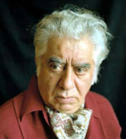

Արամ Խաչատրյան
 20-րդ դարի երաժշտական արվեստի խոշորագույն ներկայացուցիչներից է հայ նոր կոմպոզիտորական դպրոցի հիմնադիր Արամ Խաչատրյանը: Մեծատաղանդ և ոգեշունչ արվեստագետը՝ ստեղծագործողը և դիրիժորը, մանկավարժը և երաժշտական-հասարակական գործիչը, օժտված լինելով երաժշտության մեջ նոր, լայնահուն, հեռանկարային ուղիներ նշագծերս ունակությամբ, պատվավոր տեղ գրավեց համաշխարհային երաժշտության մեջ: Արտահայտելով դարաշրջանի առաջադիմական-լավատեսական մղումները, ելնելով ազգային հարուստ ավանդույթներից, կոմպոզիտորը ստեղծեց նորարական արվեստ, որի լավագույն մասով հարստացրեց 20-րդ դարի դասական արվեստի գանձարանը: Արամ Խաչատրյանի ստեղծագործությամբ դարաշրջանի երաժշտությունը հարստացավ կենսակայուն խոհեր և հույզեր, կիրք և կամք մարմնավորող արվեստով:
Կոմպոզիտորի՝ շուրջ հինգ տասնամյակ շարունակված ստեղծագործական ուղին, համընկնելով հայ նոր երաժշտության կազմավորման, գեղագիտական-գեղարվեստական սկզբունքների բյուրեղացման շրջանին, հզոր ազդակ էր նրա առաջընթացի և համաշխարհային ճանաչման համար:
Արամ Խաչատրյանի ծնողները հինավուրց Գողթան գավառից էին, որը պատմահայր Մովսես Խորենացին գովերգել էր որպես շնորհալի երգիչ-երաժիշտների հայրենիք: Վերին Ազա (այժմ՝ Նախիջևանի մարզ) գյուղից էր կոմպոզիտորի հայրը՝ Եղիա Խաչատրյանը, որը պատանեկության տարիներից բնակվելով Թիֆլիսում, տիրապեւոել էր կազմարարի արհեստին, ամուսնացել նույն մարզի Ներքին Ազա գյուղում ծնված Ղումաշի հետ: Համեստ կազմարարի չորս որդիներից ավագը՝ Սուրենը, ճանաչված թատերական գործիչ էր, ռեժիսոր, Լևոնը՝ երգիչ, համամիութենական ռադիոյի մենակատար: Բայց այս ընտանիքը պիտի փառաբաներ 1903 թվի հունիսի 6-ին ծնված կրտսեր որդին՝ Արամը:
Իր՝ կոմպոզիտորի խոստովանությամբ մանկության տարիների տպավորությունները՝ ժողովրդական երաժշտության հարուստ մթնոլորտ, ժողովրդական տոնակատարություններ, կենցաղում հնչող աշուղների երգ ու նվագ, խորը դոոշմվել էին հիշողության մեջ:
Թիֆլիսի բազմերանգ, խայտաբղետ, հուզառատ երաժշտական կենցաղում թարմ էին Ք.Կարա-Մուրզայի, Մ.Եկմալյանի և, հատկապես, Կոմիտասի համերգների տպավորությունները: Սոֆիա Արղությանի պանսիոնում, ուր կրթություն ստացավ պատանին, սիրված էին երգի դասերը, որոնք հմտորեն վարում էր Մ.Եկմալյանի աշակերտ, հետագայում ականավոր երաժշտագետ և երգիչ Մուշեղ Աղայանը:
Պատանեկության տարիներից երաժշտության մոլի սիրահար Արամ Խաչատրյանն ինքնուրույն դաշնամուր է նվագել, փորձել է կրկնել շուրջը հնչող երաժշտությունը՝ յուրովի «մշակելով» այն: Պանսիոնից հետո, սովորելով առևտրական ուսումնարանում, նա մասնակցել է փողային նվագախմբի պարապմունքներին, նվազել տենոր և բարիտոն: Փողային գործիքներին գործնականում տիրապեւոելը իր դրական դերը խաղաց ապագա ստեղծագործողի կյանքում:
Մանկությունից մշտապես առնչվելով ժողովրդական և աշուղական երաժշտությանը, Խաչատրյանը մինչև 14-15 տարեկան հասակը չառնչվեց Թիֆլիսի պրոֆեսիոնալ հարուստ երաժշտությանը: Կոմպոզիտոր և դիրիժոր Ն.Չհրեպնինի (1873-1945) ղեկավարությամբ սիմֆոնիկ համերգը Ամառային այգում, և Զ. Փալիաշվիլու (1871-1933) «Աբեսալոմ և Էթերի» օպերային ներկայացումը (1919 թ.) անջնջելի տպավորություն գործեցին՝ խորացնելով երաժշտությանը նվիրվելու բուռն տենչը:
1921 թվին Արամ Խաչատրյանը, ավագ եղբոր՝ Սուրենի ջանքերով բնակություն հաստատեց Մոսկվայում, ուր սկսեց սովորել համալսարանի կենսաբանական բաժնում:
Եվս որոշ ժամանակ և երաժշտությունը հաղթանակեց: 19-ամյա երիտասարդը՝ մասնագիտական տարրական գիտելիքների միայն մոտավոր ծանոթ լինելով, թողեց համալսարանը ու դարձավ Գնեսինների երաժշտական ուսումնարանի սան: Ընդունվելով դասատու Ս. Բիչկովի թավջութակի դասարան՝ նա այնուհետև աշակերտեց պրոֆեսոր Ա. Բորիսյակին:
Մոսկովյան առաջին տարիներին, երբ ապրում էր իր եղբոր՝ Սուրենի տանը, նրան բախտ վիճակվեց առնչվել ականավոր արվեստագետների՝ դերասանների, նկարիչների հետ, շիկացած բանավեճերի վկան լինել: Տան հագեցած հոգևոր մթնոլորտին գումարվում էր ուսումնարանի հետաքրքիր երաժշտական կյանքը, ուր պաշտոնական երեկոներից բացի, ընդունված էին և երիտասարդ երաժիշտների հավաքները, ստեղծագործությունների համատեղ կատարումները, քննարկումները: Արամ Խաչատրյանին շրջապատողն ներազդող «փոքր» շրջաններից բացի կար և «մեծը»՝ Մոսկվայի երաժշտական-թատերական հարուստ կյանքը՝ մշտական կամերային համերգները, սիմֆոնիկ երաժշտության երեկոները, օպերային և դրամատիկական ներկայացումները:
Թավջութակի լարված, նպատակամետ պարապմունքներին զուգահեռ, Արամ Խաչատրյանը դաշնա¬մուրի դասեր էր ստանում հիանալի երաժիշտ-մանկավարժ Ելենա Գնեսինայից, որոնց ընդհատվելը հետագայում խորապես ափսոսում էր: Ուսումնարանում հարմոնիա դասավանդող ականավոր կոմպոզիտոր Միքայել Գնեսինի ուշադրությունը գրավեց ուսման մեջ անհագ երիտասարդի ստեղծագործական ձիրքը, որի շնորհիվ 1925 թվին Խաչատրյանը ըդնունվեց նորաստեղծ կոմպոզիտորական դասարանը: Կոմպոզիցիային նվիրվելու հարցը դեռևս լիովին չէր լուծվել, երբ ձեռքերի հիվանդությունը (միազիտ) նրան ստիպեց հրաժարվել կատարող-թավջութակահարի մասնագիտությունից:
Ստեղծագործական դասարանի ղեկավար Մ.Գնեսինի իմաստուն խորհրդով Խաչատրյանն իր ուշադրությունը կենտրոնացնում է հայ երաժշտության ինքնատիպ կերպը ճանաչելու վրա, և մինչ այդ բնազդաբար յուրացվածը իմաստավորվում, վերաճում է գեղարվեստական մտածելակերպի, դաոնում ստեղծա-գործելու կարևոր նախապայման:
Հայկական մշակույթին հաղորդակից լինելուն մեծապես նպաստեց Մոսկվայի Հայկական կուլտուրայի տունը, որի շուրջն էին համախմբված զգայի թվով հայ երաժիշտներ, դերասաններ: Այստեղ է, որ նա արդեն գիտակցված, առանձնակի հաճույքով, նպատակամետ ունկնդրեց Շարա Տալյանի կազմակերպած աշուղական երգի երեկոները: Գեղարվեստական տպավորությունների, ազգային տեսադաշտի ընդլայնման կարևոր աղբյուրներից էին նաև հանդիպումները Ալ. Սպենդիարյանի և Ե. Չարենցի հետ, որոնք բարեբեր ե-ղան ազգային ճանաչման ճանապարհին:
«Հենց սկզբից Խաչատրյանի ստեղծագործություններում նկատելի էին ինքնուրույն երաժշտական մտածողության սաղմերը, և զգացվում էր երիտասարդ ու ժամանակակից կյանքի զարկերակը»: Նման խոսքերով բնութագրեց Մ. Գնեսինը հետաքրքիր և հագեցած կյանքով ապրող երիտասարդ երաժշտի ստեղծագործական ուսման ընդամենը երկրորդ տարվա ընթացքում գրած գործերը՝ Պարը ջութակի ու դաշնամուրի համար, դաշնամուրային պիեսները:
Խորհրդային արվեստի, այդ թվում՝ երաժշտության, բյուրեղացման և զարգացման առաջին շրջանն ըն-թանում էր իրարամերժ ուղղությունների, խմբավորումների, հակադիր տեսակետների սուր բախման մթնոլորտում, երբ իշխում էր անցյալի գեղարվեստական ժառանգության նկատմամբ ժխտողական դիրքորոշում: Այդ տարիներին որոշակի դարձավ ծայրահեղություններից և չափազանցություններից խուսափող, անցյալի արժեքներն ըստ արժանվույն գնահատող, միաժամանակ, նորի ու նորագույնի նկատմամբ զգայուն ու ընկալունակ երիտասարդ երաժշտի համակրանքը՝ Բախ, Բերլիոզ, Չայկովսկի, Դեբյուսի, Ռավել, Ստրավինսկի: ժամանակակից խորհրդային, մասնավորապես, ռուսական երաժշտության մեջ կոմպոզիտորի գեղարվեստական հետաքրքրությոնների կենտրոնում էին մեծ վերելքի շրջանն ապրող Ն.Մյասկովսկու, Ս.Պրոկոֆևի և երիտասարդ Դմ.ՇոստակովիձԻ ստեղծագործական սխրանքները:
Իր նյութականը մե՛կ բեռնակիր բանվորի, մե՛կ մանկապարտեզի դաշնակահարի պարտականություններով հոգալով՝ Արամ Խաչատրյանը կլանված էր ուսմամբ ու ստեղծագործությամբ: Դեռևս Գնեսինների ուսումնարանում ոաանելիս ականավոր ռեժիսոր Ռուբեն Սիմոնովի հանձնարարությամբ նա երաժշտու¬թյուն է գրել Մոսկվայի Հայկական կուլտուրայի տանը կից թատերական արվեստանոց-ստուդիայի՝ Հ.Պարոնյանի «Բաղդասար աղբար» (1927), «Ատամանբույժն արևելյան», Գ.Սունդուկյանի «Խաթաբալա» (1928) ներկայացումների համար: Այդ գործնական աշխատանքով սկիզբ դրվեց նրա ստեղծագործության կարևոր բնագավառներից մեկին:
1928 թվին արվեստանոց-ստուդիայի Երևանի ու Լենինականի հյուրախաղերին մասնակցեց նաև նվագախմբի ղեկավար Արամ Խաչատրյանը: Նրա համար Հայաստանում ապրած այդ օրերը հիշարժան էին հայ մշակույթի մի շարք գործիչների հետ հանդիպումներով: Հատկապես հետաքրքիր և ուսանելի էին զրույցները Ռոմանոս Մելիքյանի հետ:
Մոսկվայի կոնսերվատորիայի Մյասկովսկու կոմպոզիտորական դասարանում ուսանելը (1929) բացեց երաժշտի ստեղծագործական կենսագրության ուշագրավ էջերից մեկը: Ռուս խոշոր երաժիշտ, լայն մտահորիզոնի տեր արվեստագետ, հմուտ մանկավարժ Նիկոլայ Մյասկովսկին մեծ և շնորհակալ դեր խաղաց իր աշակերտի բազմակողմանի զարգացման, ինքնատիպ մտածողության կատարելագործման հարցում: Նրա իմաստուն խորհուրդները խորապես տպավորվեցին և գործնականում իրագործվեցին հետագա տարիներին: Հոգևոր վեհ սկզբունքների տեր, կիրթ և զուսպ մտավորական Ն. Մյասկովսին զգալիորեն ազդեց նաև Արամ Խաչատրյանի մարդկային էության, բարոյական նկարագրի վրա: Կոնսերվատորիայում ուսանելու տարիներին ստեղծված խոշոր կտավի գործերում (Սոնատ ջութակի ու դաշնամուրի համար, Դաշնամուրային տրիո, Պարային սյուիտ և վերջապես, դիպլոմային աշխատանքը՝ Սիմֆոնիան) անհամեմատ որոշակի են որոնումները դասական ձևի պարտադիր սխեմայի հաղթահարման, արտահայտչամիջոցների շրջանակի համարձակ ընդլայնման ուղղությամբ: Այս գործերի նորարարական ոգին անտարբեր չթողեց երաժիշտներին, այդ թվում՝ Սերգեյ Պրոկոֆևին, որն իր հետ Փարիզ տարավ և այնտեղ կազմակերպեց Դաշնամուրային տրիոյի կատարումը:
Ուսման տարիներին գրվեց շեքսպիրյան «Մակբեթի» երաժշտությունը՝ Երևանի Գ.Սունդուկյանի անվան դրամատիկական թատրոնի բեմադրության համար: Այն սկիզբ դրեց շեքսպիրյան թեմային Խաչատրյանի արվեստում: Նույն այգ ժամանակ կոմպոզիտորը «Պեպո» կինոնկարի համար երաժշտություն գրելու պատվեր ստացավ:
Ուսման և ստեղծագործության հետ Արամ Խաչատրյանը. Հայաստանի պետական երաժշտական հրատարակչության ներկայացուցիչ և սրբագրիչ էր. Մոսկվայի Հայկական կուլտուրային տունն իրականացնում էր հայ կոմպոզիտորների ստեղծագործությունների հրատարակությունը:
1934 թվին Արամ Խաչատրյանի անունը ոսկե տառերով գրվում է Մոսկվայի կոնսերվատորիայի լավագույն շրջանավարտների մարմարյա պատվո տախտակին:
Վիթխարի ներշնչանքի, ստեղծագործական հզոր կարողությունների բացահայտման, գեղարվեստական ընդհանրացումների իրականացման շրջանի սկիզբը խորհրդանշեց Դաշնամուրային կոնցերտը, որը Խաչատրյանն ստեղծեց Մոսկվայի կոնսերվատորիայի ասպիրանտուրայում՝ Ն.Մյասկովսկու ղեկավարությամբ:
Նորաստեղծ կոմպոզիտորների միությունը (1932) ստեղծագործական աշխատանքին զուգահեռ, ծավալեց երաժշտական-հասարակական լայն գործունեություն՝ նպատակամղելով իր անդամների քաղաքացիական եռանդը: Այդ տարիների հիշարժան իրադարձություններից էր երիտասարդ արվեստագետների, այդ թվում՝ Արամ Խաչատրյանի հանդիպումը Ռոմեն Ռոլանի հետ Մաքսիմ Գորկու տանը, որի ժամանակ ֆրանսիացի գրողը հետաքրքրվեց հատկապես հայ երաժշտությամբ: Ընդառաջելով այդ հետաքրքրությանը Խաչատրյանը ֆրանսիացի գրողին նվիրեց Կոմիտասի ազգագրական ժողովածուն և Ռ.Մելիքյանի «Զմրուխտի» երգաշարը:
1937 թվին Արամ Խաչատրյանը ստանձնեց Մոսկվայի կոմպոզիտորների միության նախագահի տեղակալի պաշտոնը, իսկ երկու տարի անց՝ ընտրվեց Խորհրդային Միության կոմպոզիտորների միության կազմկոմի նախագահի տեղակալ: Մեծ նվիրվածությամբ ու եռանդով շուրջ մեկ տասնամյակ ղեկավարեց Կոմպոզիտորների միությունը:
Կազմակերպչական լարված ու հագեցած գործունեությունը չէր խոչընդոտում Խաչատրյանի ստեղծագործական աշխատանքին: Երաժշտի գրելաոճի հասունացման շրջանում կյանքի կոչվեցին Սիմֆոնիկ պոեմը, «Երջանկություն» բալետը, Կոնցերտը ջութակի ու նվագախմբի համար, թատերական ներկայացումների ու կինոնկարների համար գրված երաժշտությունը:
Հայրենական մեծ պատերազմը նոր հուն տեղափոխեց երաժիշտների մտահղացումներն ու որոնումները: Կապիտան Գաստելլոյի մասին բալլադը, «Գվարդիականների քայլերգը», երգերը կոմպոզիտորի առաջին արձագանքներն էին պատերազմին:
Հայրենականի ամենադժվարին օրերին՝ 1942 թ. դեկտեմբերին, Պերմում գտնվող Լենինգրադի Կիրովի անվան օպերային թատրոնն իրականացրեց «Գայանե» բալետի բեմադրությունը: «Գայանե» բալետի (որի համար հիմք էր ծառայել «Երջանկություն» բալետը) պրեմիերայից մեկ տարի անց՝ 1943 թ. դեկտեմբերին, Մոսկվայում առաջին անգամ հնչեց կոմպոզիտորի Երկրորդ սիմֆոնիան, որը Հայրենական մեծ պատերազմի թեմայի գեղարվեստական ընդհանրացման ծանրակշիռ մարմնավորումներից էր: Մոնումենտալ այդ կտավի 2, 3 և 4-րդ մասերը գրվել էին ընդամենը 17 օրում:
Հետպատերազմյան առաջին իսկ տարում Խաչատրյանը գրեց գործիքային երրորդ՝ Թավջութակի կոնցերտը:
Կոնցերտների մենակատարի նվագամասի զեղարվեստականի և պրոֆեսիոնալի ներդաշնակությամբ շահագրգռված հեղինակը, երաժշտությունը հորինելիս, դիմել է նշանավոր կատարողների՝ Դաշնամուրային կոնցերտը գրելիս՝ Լև Օբորինին, Ջութակի կոնցերտն ստեղծելիս՜ Դավիթ Օյստրախին: Թավջութակի կոնցերտը հորինելիս նրան իր գործնական խորհուրդներով օգնել է Ստանիսլավ Կնուշևիցկին: Այս երեք երաժիշտները, որոնց նվիրված էին կոնցերտները, հանդիսացան տվյալ կոնցերտների առաջին կատարողները՝ դրանով իսկ կանխորոշելով մեկնաբանման հաջողությունը:
ԽՍԿԿ Կենտկոմը 1948 թ. փետրվարի 10-ին Վ.Մուրադելու «Մեծ բարեկամություն» օպերայի մասին որոշում ընդունեց, որում անհիմն և անիմաստ քննադատության ենթարկվեցին նաև խոշորագույն երաժիշտներ Ն. Մյասկովսկին, Ս. Պրոկոֆևը, Դ. Շոստակովիչը, Ա. Խաչատրյանը: Տաս տարի անց՝ 1958 թ. կուսակցության Կենտկոմը՝ իր նոր որոշմամբ հատուկ նշեց այդ կոմպոզիտորների քննադատության անարդարացիությունը: Մեծ արվեստագետներին նվաստացնելը, ստեղծագործությունները չկատարելը, մարդկային արժանապատվությունը վիրավորող մթնոլորտը ծանր փորձություն Էին երաժիշտների համար: Հոգեկան ուժերի մեծ լարում պահանջվեց նրանցից՝ իրենց ստեղծագործական և մարդկային արժանապատվությունը պահպանելու համար:
40-ական թվականների վերջին, 50-ականների սկզբին Արամ Խաչատրյանը մի նոր խոշոր երկ Է հղանում՝ «Uպարտակ» բալետը: Միաժամանակ, 1950 թվականից արվեստագետն ստեղծագործական եռանդով սկսեց գործունեություն ծավալել երկու նոր, կարևոր բնագավառներում՝ մանկավարժական (Մոսկվայի կոնսերվատորիայում, Գնեսինների անվան ինստիտուտում) և կատարողական՝ դիրիժորական:
Տարիների ընթացքում կոմպոզիտորն ստեղծեց դասավանդման իր համակարգը, որը Ն.Մյասկովսկա և իր սեփական ստեղծագործական փորձի յուրօրինակ արտացոլումն Էր: Նրա ղեկավարած կոմպոզիտորական դասարանի կարևորագույն նպատակներից Էին ուսանողի ազգային պատկանելությունից բխող ուրույն մտածողության զարգացումը, մասնագիտական լուրջ հիմունքների մշակումը, տարբեր ժանրերի և երաժշտական ձևերի ստեղծման հիմնաքարային խնդիրների լուծումը:
«Խստապահանջ Է նա: Երբեք գովեստներ չի շռայլում: Ձգտում Է, որ աշակերտն ամեն ինչ ընկալի և յուրացնի հենց դասարանում: Չի հանդուրժում նորույթներով հոխորտալու սնապարծությունը: Աշակերտը պետք Է պատասխանատու լինի իր երկի ամեն մի նոտայի համար: Շատ Է գնահատում երիտասարդ երաժշտի հաստատակամությունը: Տասնյակ անգամ դասարանում լսում Է արդեն ավարտված ու պատրաստ ստեղծագործությանը՝ մինչ համոզվում Է, որ այն կարելի Է հանձնել կատարման»1: Այսպես Է գրել Մոսկվայի կոնսերվատորիայի ասպիրանտուրայում այդ տարիներին ուսանած Էդգար Հովհաննիսյանը: Արամ Խաչատրյանի ստեղծագործական դասարանն են ավարտել վառ անհատականությամբ օժտված, մեծ ճանաչում ձեռք բերած երաժիշտներ Ա. Էշպայը, Բ. Տրոցյուկը, Կ. Վոլկովը, Մ.Թարիվերղիևը, Ալ. Ռիբնիկովը, Ռ. Բոյկոն, Լ. Լապուտինը, Էդ. Խաղագործյանը, Ն. Գաբունինան, Մ. Մինկովը, Ա. Վիերուն (Ռումինիա), Ն.ՏԷրահարան (ճապոնիա), երաժիշտներ Կուբայից, Բուլղարիայից, նախկին ԽԱՀՄ հանրապետություններից և այլ երկրներից:
Կոմպոզիտորի համար իսկական հայտնության էր դիրիժորական գործունեությունը, ինչն ունկնդրի հետ անմիջական շփման, ստեղծագործության ներգործության արձագանքն զգալու անփոխարինելի միջոց է: Կոմպոզիտոր-դիրիժորի ելույթներն արվեստասերներին հնարավորություն տվեցին հաղորդակից լինել երկերի հեղինակային մեկնաբանման ուշագրավ և հուզիչ պահերին:
Ժամանակի ընթացքում Խաչատրյան-դիրիժորի ելույթները դարձան ավելի հաճախակի, հարստացավ երկացանկը, ընդլայնվեց երկրների, քաղաքների, բնակավայրերի աշխարհագրությունը: Կոմպոզիտորին վիճակվեց աշխատեն ելույթներ ունենալ բազմաթիվ նվագախմբերի, նշանավոր կատարողների հետ: Տարիների փորձը նպաստեց նրա դիրիժորական արվեստի հասունացմանը, ունկնդրի վրա առանձնակի հրապույրով ներգործելուն:
Դիրիժոր Արամ Խաչատրյանի արվեստին ծանոթացան Անդրկովկասի, Ռուսաստանի, Ուկրաինայի, Մերձբալթյան հանրապետությունների, Սիբիրի քաղաքներում, Մերձավոր Արևելքի երկրներում, Եգիպտոսից մինչև Նորվեգիա, Ֆինլանդիայից մինչև Ճապոնիա, Լեհաստանից մինչ Լատինական Ամերիկա և Հավայան կղզիներ: Կոմպոզիտորի արվեստն ամենուր ընդունվեց բացառիկ ջերմությամբ: Հայ երաժշտի «ստեղծագործությունը փառաբանվեց աշխարհի բազմաթիվ երկրներում:
1956 թվի դեկտեմբերի 27-ին բեմական կյանք ստացավ 20-րդ դարի ամենից ուշագրավ բալետային գործերից մեկը՝ Արամ Խաչատրյանի «Սպարտակը», որի առաջին բեմադրությունն իրականացրեց Լենինգրադի Կիրովի անվան օպերայի և բալետի պետական թատրոնը: Անցած տասնամյակների ընթացքում բալետը բեմադրվեց և ներկայացվեց մեր երկրի և արտասահմանի բազմաթիվ օպերային թատրոններում, հնչեց աշխարհի բոլոր մայրցամաքների սիմֆոնիկ համերգներում:
«Սպարտակին» զուգահեռ, կոմպոզիտորը երաժշտություն էր գրում բեմադրությունների և կինոնկարների համար, որոնցից դարաշրջանի հոգեբանական մթնոլորտի ճշմարտացի և ազդեցիկ վերարտադրմամբ առանձնանում է երաժշտությունը Բ. Լավրենևի «Լերմոնտով» պիեսի, Շեքսպիրի «Մակբեթ» ( նոր տարբերակ) և «Լիր արքա» ներկայացումների, ինչպես և «Օթելլո» կինոնկարի համար:
Գործիքային երաժշտության նշանաբանի տակ անցավ կոմպոզիտորի ստեղծագործական ուշ շրջանը՝ կյանքի վերջին երկու տասնամյակները:
Գործիքային փոքր կտավի գործերի կողքին (թիվ 2 ալբոմը երեխաների համար) կյանք ստացան Դաշնամուրային սոնատը, Ջութակի, Թավջութակի, Դաշնամուրի կոնցերտ-ռապսոդիաները՝ գործեր, որոնք արտացոլում էին կոմպոզիտորի ոճի փոփոխությունները, կերպարային բովանդակության մեջ տեղի ունեցած տեղաշարժերը: Այդ տեղաշարժերն առաջ բերեցին արտահայտչամիջոցների շրջանակի ընդլայնում, ինչը հատկապես նկատելի դարձավ 70-ական թվականներին գրված մենանվագ սոնատներում՝ ջութակի, թավջութակի և ալտի համար, որոնցով եզրափակվեց երաժշտի ստեղծագործական ուղին:
Ստեղծագործական, մանկավարժական, կատարողական գործունեությանը զուգընթաց Արամ Խաչատրյանը, իրեն հատուկ եռանդով, նվիրվում է նաև երաժշտական-հասարակական գործունեությանը: Կրկին մասնակցելով կոմպոզիտորական կազմակերպության ղեկավար աշխատանքներին, դրա հետ կապված հանդիպումներին, քննարկումներին, նա զուգընթաց կատարում է ԽՍՀՄ - Լատինական Ամերիկա մշակութային կապի ընկերության նախագահի պատվավոր պարտականությունները, մասնակցում) տարբեր մրցույթների ժյուրիի աշխատանքներին, հանդես է գալիս հոդվածներով, մասնակցում Հարցազրույցների:
Կյանքի վերջին տասնամյակներում ընդլայնվում է կոմպոզիտորի կապը աշխարհի տարբեր Երկրների գրողների, արվեստագետների, հասարակական գործիչների հետ: Դեռ մանրակրկիտ ոաումնասիրության կարոտ է Արամ Խաչատրյանի նամականին, որն, անկասկած, նորովի կներկայացնի նրա անհատականության անկրկնելիությունը, անձի բարդությունը և յուրօրինակությունը:
1978 թվի մարտի 6-ին Մոսկվայի կոմպոզիտորների միության նիստում Արամ Խաչատրյանն իր ջերմ և իմաստուն խոսքն ասաց դարաշրջանի խոշորագույն երաժիշտներից մեկի՝ Սերգեյ Պրոկոֆևի մահվան 25-րդ տարելիցի առթիվ: Դա նրա վերջին ելույթն էր:
Արամ Խաչատրյանը վախճանվեց 1978 թ. մայիսի 1-ին երկարատև, ծանր հիվանդությունից: Մոսկվայի կոնսերվատորիայի մեծ դահլիճում սգո հանդիսավոր արարողությունից հետո կոմպոզիտորի աճյունը տեղափոխվեց Երևան՝ ի կատարումն նրա վերջին ցանկության, և մայիսի 6-ին հողին հանձնվեց Արվեստի գործիչների պանթեոնում: Հայ ժողովրդի մեծ զավակի սգո թափորին մասնակցեցին տասնյակ հազարավոր հայրենակիցներ, բազմաթիվ օտարազգի բարեկամներ, որոնք վերջին հրաժեշտը ւովին արվեստագետին: